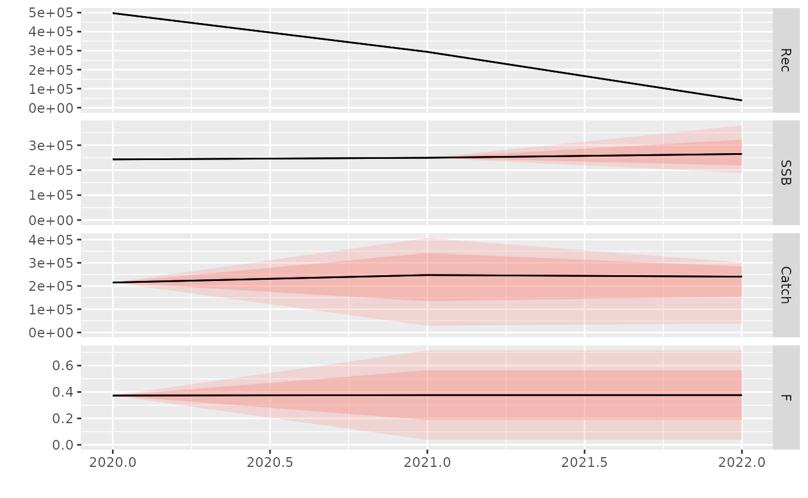
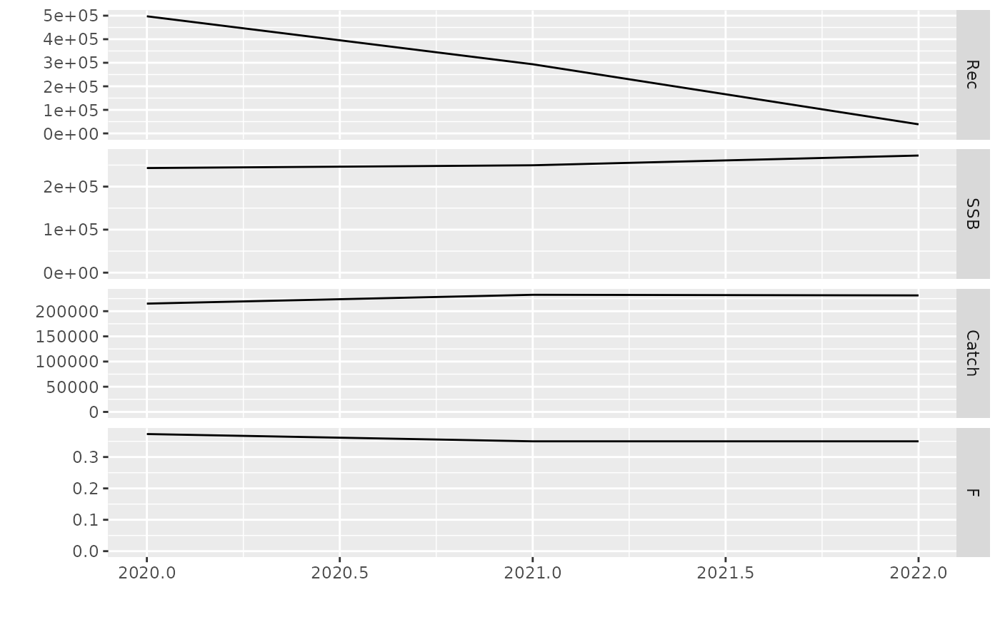

run-single.RmdIn addition to the classic Lowestoft’s MFDP input data, R MFDP also supports running forecast using a single file for its input data. This new method simplify the run for the users as they can have a quick overview of the data quickly.
Please note you will need to provide a control file if you want to use a single input data file.
The mfdp package provides two samples of the single input files: here. In the same directory you can also find a sample of the control file.
For the impatient, here is how to quickly run a forecast using the provided sample files:
# Load library
library(mfdp)
# Get input data path
input_file <- system.file("sample", "nea-had-2020.input.csv", package = "mfdp")
# Get param data path
config_file <- system.file("sample", "nea-had-2020.params.txt", package = "mfdp")
# Reading a single file input must be done in two steps
## Parse the input as FLStock object
input <- read_mfdp_input_table(input_file)
## Run the forecast
output <- mfdp(input, configs = config_file, run_name = "test", out_dir = "out")For the more detailed descriptions, please continue below.
The structure of the input data file is identical to the Lowestoft’s MFDP .prd file output. Here is an example of the data:
nea-had-2020.input.csv
"MFDP version 1a"
"Run: Manage2020"
"Time and date: 15:02 27.04.2020"
"Fbar age range: 4-7"
""
""
2020
"Age","N","M","Mat","PF","PM","SWt","Sel","CWt"
3,497416,.402,.027839644,0,0,.276890309,.037,.716
4,531880,.269,.084263959,0,0,.518907563,.154,.95
5,171000,.238,.230460922,0,0,.859979101,.324,1.224
6,60331,.273,.526207605,0,0,1.35966736,.504,1.604
7,29429,.2,.779874214,0,0,1.854188211,.524,1.895
8,10839,.2,.884133612,0,0,2.16838843,.584,2.077
9,9746,.2,.963917526,0,0,2.784901758,.584,2.38
10,3557,.2,.976530612,0,0,3.015625,.584,2.626
11,4436,.2,1,0,0,3.542497377,.584,2.79
12,1896,.2,1,0,0,3.361,.584,3.045
13,4665,.2,1,0,0,3.628,.584,3.329
""
2021
"Age","N","M","Mat","PF","PM","SWt","Sel","CWt"
3,293623,.402,.029,0,0,.269,.037,.708
4,".",.269,.083,0,0,.515,.154,.946
5,".",.238,.215,0,0,.823,.324,1.192
6,".",.273,.457,0,0,1.214,.504,1.471
7,".",.2,.756,0,0,1.774,.524,1.846
8,".",.2,.904,0,0,2.285,.584,2.128
9,".",.2,.948,0,0,2.585,.584,2.311
10,".",.2,.985,0,0,3.222,.584,2.627
11,".",.2,1,0,0,3.416,.584,2.806
12,".",.2,1,0,0,3.726,.584,2.993
13,".",.2,1,0,0,3.677,.584,3.417
""
2022
"Age","N","M","Mat","PF","PM","SWt","Sel","CWt"
3,38636,.402,.029,0,0,.303,.037,.744
4,".",.269,.086,0,0,.526,.154,.957
5,".",.238,.21,0,0,.812,.324,1.182
6,".",.273,.436,0,0,1.168,.504,1.43
7,".",.2,.693,0,0,1.589,.524,1.736
8,".",.2,.888,0,0,2.191,.584,2.087
9,".",.2,.959,0,0,2.718,.584,2.358
10,".",.2,.976,0,0,3.001,.584,2.573
11,".",.2,1,0,0,3.624,.584,2.807
12,".",.2,1,0,0,3.596,.584,3.004
13,".",.2,1,0,0,4.029,.584,3.376
""
"Input units are thousands and kg - output in tonnes"The control file must be a text file. Here is a sample of the configuration file:
nea-had-2020.params.txt
* example param file for NEA Haddock 2020
Ftarget 0.35 * target F in HCR
Fpa 0.47 * Fpa
Flim 0.77 * Flim
Fagerange 4 7 * age range for reference F (if not given anywhere else)
Bpa 80000 * trigger point in HCR
3yearrule no * use 3-rule in calculating TAC, yes/no
TACpreviousyear 215000 * TAC in intermediate year, used in connection with calculating TAC in first year
maxchangeup 25 * max annual increase in TAC (%)
maxchangedown 25 * max annual decrease of TAC (%)NOTE: The keywords are case sensitive and all the values are mandatory.
Running the forecast using the single input is a two-steps procedure:
The first step is we load the data into an FLStock class object:
# Load the mfdp library
library(mfdp)
# Load the input data
input_file <- system.file("sample", "nea-had-2020.input.csv", package = "mfdp")
input <- read_mfdp_input_table(input_file)
print(input)
#> An object of class "FLStock"
#>
#> Name:
#> Description:
#> Quant: age
#> Dims: age year unit season area iter
#> 11 3 1 1 1 1
#>
#> Range: min max pgroup minyear maxyear minfbar maxfbar
#> 3 13 13 2020 2022 4 7
#>
#> catch : [ 1 3 1 1 1 1 ], units = NA
#> catch.n : [ 11 3 1 1 1 1 ], units = NA
#> catch.wt : [ 11 3 1 1 1 1 ], units = NA
#> discards : [ 1 3 1 1 1 1 ], units = NA
#> discards.n : [ 11 3 1 1 1 1 ], units = NA
#> discards.wt : [ 11 3 1 1 1 1 ], units = NA
#> landings : [ 1 3 1 1 1 1 ], units = NA
#> landings.n : [ 11 3 1 1 1 1 ], units = NA
#> landings.wt : [ 11 3 1 1 1 1 ], units = NA
#> stock : [ 1 3 1 1 1 1 ], units = NA
#> stock.n : [ 11 3 1 1 1 1 ], units = NA
#> stock.wt : [ 11 3 1 1 1 1 ], units = NA
#> m : [ 11 3 1 1 1 1 ], units = NA
#> mat : [ 11 3 1 1 1 1 ], units = NA
#> harvest : [ 11 3 1 1 1 1 ], units = f
#> harvest.spwn : [ 11 3 1 1 1 1 ], units = NA
#> m.spwn : [ 11 3 1 1 1 1 ], units = NAYou might want to examine the input data to make sure everyting are properly loaded:
# Load the FLCore library
library(FLCore)
#> Loading required package: lattice
#> Loading required package: iterators
#> FLCore (Version 2.6.16.9004, packaged: 2021-09-29 09:21:02 UTC)
# Do checks
print(catch.n(input))
#> An object of class "FLQuant"
#> , , unit = unique, season = all, area = unique
#>
#> year
#> age 2020 2021 2022
#> 3 NA NA NA
#> 4 NA NA NA
#> 5 NA NA NA
#> 6 NA NA NA
#> 7 NA NA NA
#> 8 NA NA NA
#> 9 NA NA NA
#> 10 NA NA NA
#> 11 NA NA NA
#> 12 NA NA NA
#> 13 NA NA NA
#>
#> units: NA
print(catch.wt(input))
#> An object of class "FLQuant"
#> , , unit = unique, season = all, area = unique
#>
#> year
#> age 2020 2021 2022
#> 3 0.716 0.708 0.744
#> 4 0.950 0.946 0.957
#> 5 1.224 1.192 1.182
#> 6 1.604 1.471 1.430
#> 7 1.895 1.846 1.736
#> 8 2.077 2.128 2.087
#> 9 2.380 2.311 2.358
#> 10 2.626 2.627 2.573
#> 11 2.790 2.806 2.807
#> 12 3.045 2.993 3.004
#> 13 3.329 3.417 3.376
#>
#> units: NA
print(stock.n(input))
#> An object of class "FLQuant"
#> , , unit = unique, season = all, area = unique
#>
#> year
#> age 2020 2021 2022
#> 3 497416 293623 38636
#> 4 531880 NA NA
#> 5 171000 NA NA
#> 6 60331 NA NA
#> 7 29429 NA NA
#> 8 10839 NA NA
#> 9 9746 NA NA
#> 10 3557 NA NA
#> 11 4436 NA NA
#> 12 1896 NA NA
#> 13 4665 NA NA
#>
#> units: NA
print(stock.wt(input))
#> An object of class "FLQuant"
#> , , unit = unique, season = all, area = unique
#>
#> year
#> age 2020 2021 2022
#> 3 0.27689 0.26900 0.30300
#> 4 0.51891 0.51500 0.52600
#> 5 0.85998 0.82300 0.81200
#> 6 1.35967 1.21400 1.16800
#> 7 1.85419 1.77400 1.58900
#> 8 2.16839 2.28500 2.19100
#> 9 2.78490 2.58500 2.71800
#> 10 3.01562 3.22200 3.00100
#> 11 3.54250 3.41600 3.62400
#> 12 3.36100 3.72600 3.59600
#> 13 3.62800 3.67700 4.02900
#>
#> units: NA
print(ssb(input))
#> An object of class "FLQuant"
#> , , unit = unique, season = all, area = unique
#>
#> year
#> age 2020 2021 2022
#> all 243130.52 2290.55 339.49
#>
#> units: NA
print(fbar(input))
#> An object of class "FLQuant"
#> , , unit = unique, season = all, area = unique
#>
#> year
#> age 2020 2021 2022
#> all 0.3765 0.3765 0.3765
#>
#> units: f
# and so on...Now that you are confident that the data is properly loaded, we can continue to run the forecast:
# Get the config file path
config_file <- system.file("sample", "nea-had-2020.params.txt",
package = "mfdp")
# Do forecast
output <- mfdp(input, configs = config_file, run_name = "test", out_dir = "out-single")
#> Warning in is.na(raw$stk): is.na() applied to non-(list or vector) of type 'S4'
#> Saving 7.29 x 4.51 in image
#> Saving 7.29 x 4.51 in image
#> Saving 7.29 x 4.51 in image
#> Saving 7.29 x 4.51 in image
#> Saving 7.29 x 4.51 in image
#> Saving 7.29 x 4.51 in image
#> Saving 7.29 x 4.51 in image
#> Saving 7.29 x 4.51 in image
#> Saving 7.29 x 4.51 in image
#> Saving 7.29 x 4.51 in imageRunning the mfdp function above will instruct MFDP to run the forecast and write output files into ./out directory. We can check the output files:
list.files("out-classic")
#> [1] "test_prm_plot.pdf" "test_prs_plot.pdf" "test-prm.pdf"
#> [4] "test-prs.pdf" "test.xlsx"NOTE: Since we use a control file that contains Fpa, Flim, etc. we are presented with several output files from different F used in the forecast. Note also the summary file that collated the results summary from the runs.
After successfully running a forecast, MFDP returns several output objects in a single list.
The first level will have the sub-list of prm for the Management Options Table and prs for the Single Option Prediction results and
a summary table.
Let’s see the summary from the different F basis:
kableExtra::kable_styling(knitr::kable(output$summary),
bootstrap_options = "striped", latex_options = "striped")| Basis | Total catch (2021) | F ages 4-7 (2021) | SSB (2022) | % SSB change | % TAC change | % Advice change |
|---|---|---|---|---|---|---|
| fmgmt | 232542.8 | 0.3499983 | 272206.9 | 9.070391 | 8.159432 | 8.159432 |
| f0 | 0.0 | 0.0000000 | 394626.3 | 58.122544 | -100.000000 | -100.000000 |
| fsq | 245405.4 | 0.3731790 | 265781.1 | 6.495637 | 14.142057 | 14.142057 |
| fpa | 296276.8 | 0.4700000 | 240776.3 | -3.523517 | 37.803148 | 37.803148 |
| flim | 428699.2 | 0.7700000 | 179098.2 | -28.237287 | 99.394955 | 99.394955 |
Each prm and prs sub-lists contains the different basis of F used in the forecast.
# Use the F management
print(names(output[["prm"]]))
#> [1] "fmgmt" "f0" "fsq" "fpa" "flim"
# Let's see the Management Options Table for Fmgmt
print(output[["prm"]][["fmgmt"]])
#> $stk
#> An object of class "FLStock"
#>
#> Name:
#> Description:
#> Quant: age
#> Dims: age year unit season area iter
#> 11 3 1 1 1 21
#>
#> Range: min max pgroup minyear maxyear minfbar maxfbar
#> 3 13 13 2020 2022 4 7
#>
#> catch : [ 1 3 1 1 1 21 ], units = NA
#> catch.n : [ 11 3 1 1 1 21 ], units = NA
#> catch.wt : [ 11 3 1 1 1 21 ], units = NA
#> discards : [ 1 3 1 1 1 21 ], units = NA
#> discards.n : [ 11 3 1 1 1 21 ], units = NA
#> discards.wt : [ 11 3 1 1 1 21 ], units = NA
#> landings : [ 1 3 1 1 1 21 ], units = NA
#> landings.n : [ 11 3 1 1 1 21 ], units = NA
#> landings.wt : [ 11 3 1 1 1 21 ], units = NA
#> stock : [ 1 3 1 1 1 21 ], units = NA
#> stock.n : [ 11 3 1 1 1 21 ], units = NA
#> stock.wt : [ 11 3 1 1 1 21 ], units = NA
#> m : [ 11 3 1 1 1 21 ], units = NA
#> mat : [ 11 3 1 1 1 21 ], units = NA
#> harvest : [ 11 3 1 1 1 21 ], units = f
#> harvest.spwn : [ 11 3 1 1 1 21 ], units = NA
#> m.spwn : [ 11 3 1 1 1 21 ], units = NA
#>
#> $fmult
#> An object of class "FLQuant"
#> iters: 21
#>
#> , , unit = unique, season = all, area = unique
#>
#> year
#> age 2020 2021 2022
#> all 0.99118(0.000) 1.00000(0.741) 1.00000(0.741)
#>
#> units: NA
#>
#> $ftgt
#> An object of class "FLQuant"
#> iters: 21
#>
#> , , unit = unique, season = all, area = unique
#>
#> year
#> age 2020 2021 2022
#> all 0.37318(0) 0.00000(0) 0.00000(0)
#>
#> units: NA
#>
#> $parameters
#> $parameters$flag
#> [1] 1 1 3
#>
#> $parameters$target
#> [1] 215000.00 232543.00 0.35
#>
#> $parameters$hcrObj
#> $parameters$hcrObj$args
#> $parameters$hcrObj$args$tac
#> [1] 215000
#>
#> $parameters$hcrObj$args$ftgt
#> [1] 0.35
#>
#> $parameters$hcrObj$args$fpa
#> [1] 0.47
#>
#> $parameters$hcrObj$args$flim
#> [1] 0.77
#>
#> $parameters$hcrObj$args$fbar
#> [1] 4 7
#>
#> $parameters$hcrObj$args$bpa
#> [1] 80000
#>
#> $parameters$hcrObj$args$threeYrRule
#> [1] FALSE
#>
#> $parameters$hcrObj$args$maxTACVar
#> [1] 0.25
#>
#> $parameters$hcrObj$args$minTACVar
#> [1] 0.25
#>
#>
#>
#> $parameters$ssbunder
#> An object of class "FLQuant"
#> iters: 21
#>
#> , , unit = unique, season = all, area = unique
#>
#> year
#> age 2020 2021 2022
#> all 0(0) 0(0) 0(0)
#>
#> units: NAThe stk object is an FLStock class object https://flr-project.org/FLCore/reference/FLStock.html from the FLR suite https://flr-project.org/. The developers have provide a wealth of tutorial about the format here: https://flr-project.org/#tutorials.
Next we have the fmult object, which holds the F multiplier values over the years in the FLQuant class, the ftgt object which is the F target over the years, and lastly parameters object, which is the control parameters/configuration for the forecast.
Some example of methods supported by FLStock:
library(FLCore)
# Get the SSB
print(ssb(output[["prm"]][["fmgmt"]]$stk))
#> An object of class "FLQuant"
#> iters: 21
#>
#> , , unit = unique, season = all, area = unique
#>
#> year
#> age 2020 2021 2022
#> all 243131( 0) 249570( 0) 264875(80037)
#>
#> units: NA
# Get the Catch total
print(catch(output[["prm"]][["fmgmt"]]$stk))
#> An object of class "FLQuant"
#> iters: 21
#>
#> , , unit = unique, season = all, area = unique
#>
#> year
#> age 2020 2021 2022
#> all 215000( 0) 247226(165771) 240332( 79521)
#>
#> units: NA
# Get the Catch number
print(catch.n(output[["prm"]][["fmgmt"]]$stk))
#> An object of class "FLQuant"
#> iters: 21
#>
#> , , unit = unique, season = all, area = unique
#>
#> year
#> age 2020 2021 2022
#> 3 14767.05( 0.0) 8793.18( 6462.2) 1157.04( 850.3)
#> 4 66243.10( 0.0) 40281.60(28765.0) 23770.33(16633.2)
#> 5 42064.91( 0.0) 86478.01(59145.6) 52084.48(26082.8)
#> 6 20994.82( 0.0) 34256.37(20699.3) 69694.91(17848.1)
#> 7 10898.65( 0.0) 10389.28( 6142.2) 16256.27( 1784.5)
#> 8 4358.64( 0.0) 5802.15( 3272.4) 5214.05( 554.3)
#> 9 3919.12( 0.0) 2013.61( 1135.7) 2459.93( 293.8)
#> 10 1430.36( 0.0) 1810.56( 1021.1) 853.71( 101.9)
#> 11 1783.83( 0.0) 660.80( 372.7) 767.62( 91.7)
#> 12 762.43( 0.0) 824.10( 464.8) 280.16( 33.5)
#> 13 1875.92( 0.0) 1218.87( 687.4) 866.15( 103.4)
#>
#> units: NA
# Get the Fbar
print(fbar(output[["prm"]][["fmgmt"]]$stk))
#> An object of class "FLQuant"
#> iters: 21
#>
#> , , unit = unique, season = all, area = unique
#>
#> year
#> age 2020 2021 2022
#> all 0.37318(0.000) 0.37650(0.279) 0.37650(0.279)
#>
#> units: fLet’s plot the forecast results:
# Plot the Management Options Table
plot(output[["prm"]][["fmgmt"]]$stk)
# Single Option Prediction
plot(output[["prs"]][["fmgmt"]]$stk)